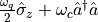
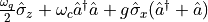
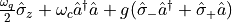
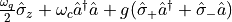
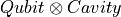

QuanGuru
quanguru.QuantumToolbox.Hamiltonians
Contains functions to create some standard Hamiltonians.
qubCavFreeHam(qubFreq, cavFreq, cavDim)
qubCavFreeHam
Creates Qubit + Cavity Hamiltonian  for given frequencies and truncated cavity dimension.
RabiHam(qubFreq, cavFreq, g, cavDim)
RabiHam
Creates Rabi Hamiltonian  for given frequencies, coupling strength, and truncated cavity dimension.
JCHam(qubFreq, cavFreq, g, cavDim)
JCHam
Creates Jaynes-Cummings Hamiltonian  for given frequencies, coupling strength, and truncated cavity dimension.
aJCHam(qubFreq, cavFreq, g, cavDim)
aJCHam
Creates anti-Jaynes-Cummings Hamiltonian  for given frequencies, coupling strength, and truncated cavity dimension.
Creates Qubit + Cavity Hamiltonian for given frequencies and truncated cavity dimension.
Hilbert space ordering is , i.e. qubit first.
qubFreq (float) – qubit frequency
cavFreq (float) – cavity frequency
cavDim (int) – (truncated) dimension for cavity
Qubit + Cavity Hamiltonian for given frequencies and truncated cavity dimension.
Matrix
Examples
# TODO
Creates Rabi Hamiltonian for given frequencies, coupling strength, and truncated cavity dimension.
g (float) – coupling strength
Rabi Hamiltonian for given frequencies
# TODO Create some examples both in here and the demo script
Creates Jaynes-Cummings Hamiltonian for given frequencies, coupling strength, and truncated cavity dimension.
Jaynes-Cummings Hamiltonian for given frequencies
Creates anti-Jaynes-Cummings Hamiltonian for given frequencies, coupling strength, and truncated cavity dimension.
anti-Jaynes-Cummings Hamiltonian for given frequencies
quanguru.QuantumToolbox.functions
quanguru.QuantumToolbox.spinRotations